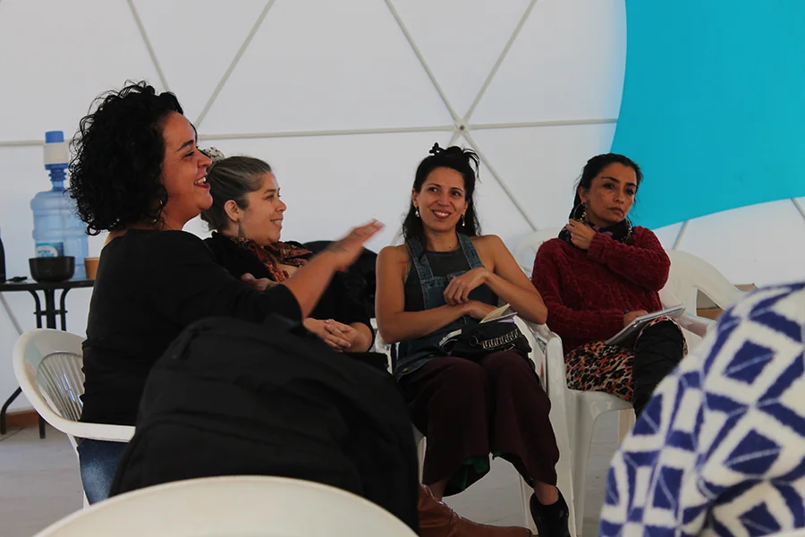

Imagen pendiente de recuperación
Encuentro Regional Puntos de Cultura Comunitaria en Taguatagua
El pasado sábado 19 de Julio se realizó el «Segundo Encuentro Regional de Puntos de Cultura Comunitaria de O’Higgins” en…
27/07/2025El pasado sábado 19 de Julio se realizó el «Segundo Encuentro Regional de Puntos de Cultura Comunitaria de O’Higgins” en…
27/07/2025Durante el fin de semana recién pasado celebramos el fin de las vacaciones de invierno en el Domo Cultural Añañuca…
14/07/2025
Agradecemos a quienes pudieron ser parte el pasado sábado 21 de junio del concierto interactivo y exposición de ilustraciones del…
24/06/2025El hito vivido el día sábado 31, refrenda el compromiso de los PCC de OHiggins por fortalecer el trabajo en…
02/06/2025
Actividad de bienestar para adultos mayores realizado el martes 29 de abril en el domo cultural de Fundación Añañuca.
08/05/2025
Mesa de diálogo denominada “Danza, Cuerpo y Territorio”
04/05/2025
Presentar a los nuevos Puntos de Cultura Comunitaria validados recientemente y continuar con los avances de los dos proyectos de…
07/01/2025
Jardín Etnobotánico Taguatagua es un proyecto de Fundación Añañuca, y que recibe financiamiento del Concurso Ciencia Pública 2021-2022 del Ministerio de…
20/12/2022